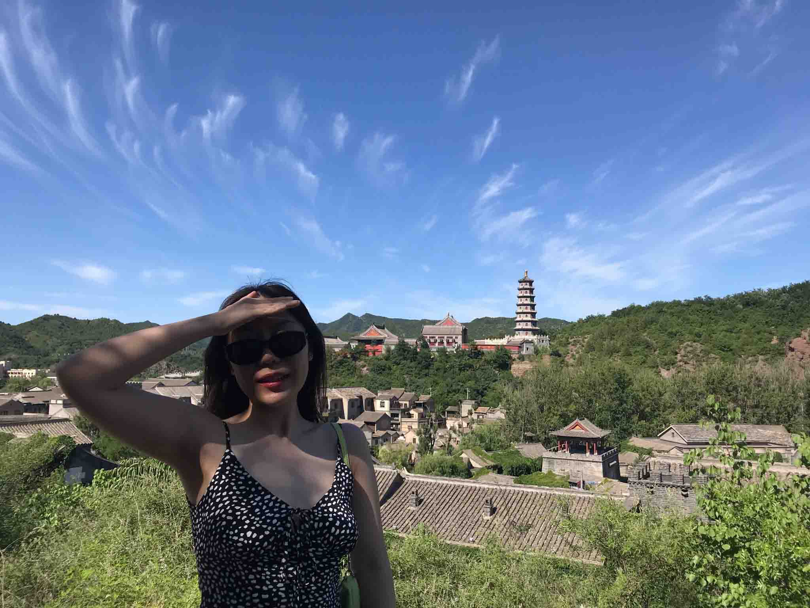

About Me
Hello everyone, my name is Rui. I worked as an accounting assistant for over 3 years and I decided to learn and break into a new field - Interactive Media Design! I’m taking this program to acquire professional academic knowledge and essential employability skills to plant the seeds for my future career - UIUX designer. Meanwhile, I’m looking to develop my network by meeting new people who are also interested in interactive media design and will possibly be or are already in this field.
My favourite quote is There is no passion to be found in setting for a life that is less than the one you are capable of living.
- Nelson Mandela
This quote inspired me to make the decision to start over in a new field.
One thing that I’m passionate about is travelling. In other words, exploring different cities! On August 26th, a couple days before school started, I went to downtown and explored the ByWard Market, and I got a traditional poncho there, which is very unique and exotic to me! I also had some BeaverTails which was so good with a cup of coffee, and enjoyed some live music which performed right in front of the ByWard Cafe. It was a fun day!
My hobbies
- cycling
- hiking
- bowling